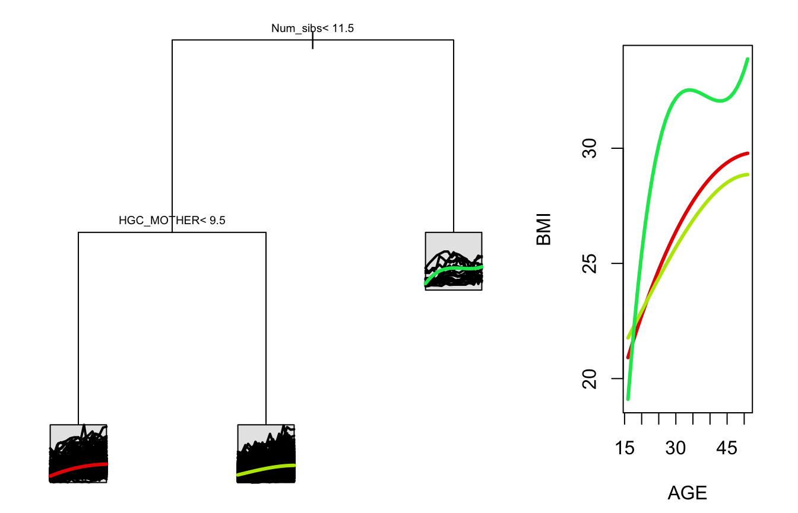
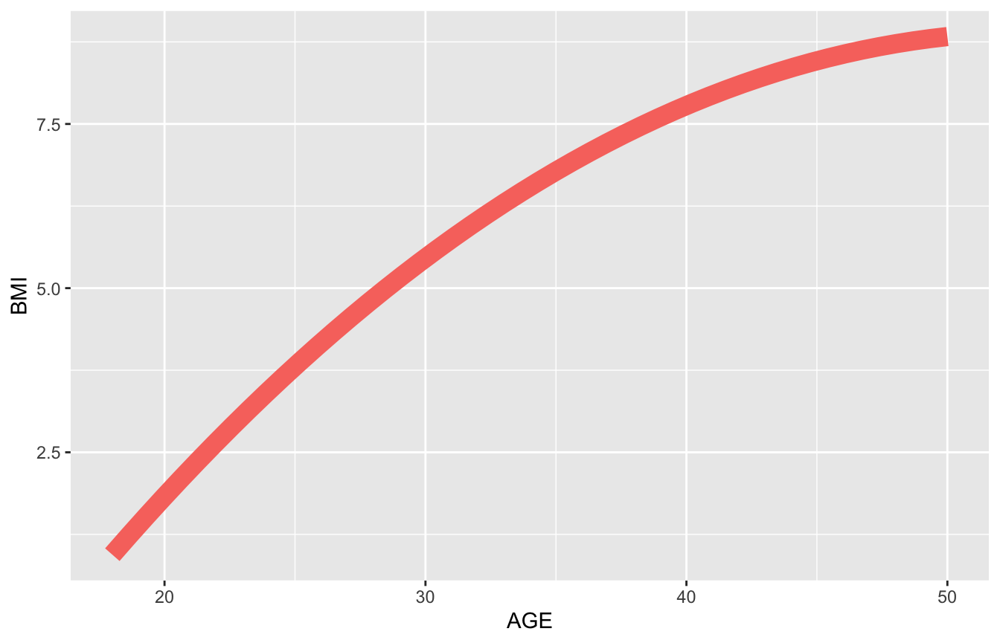
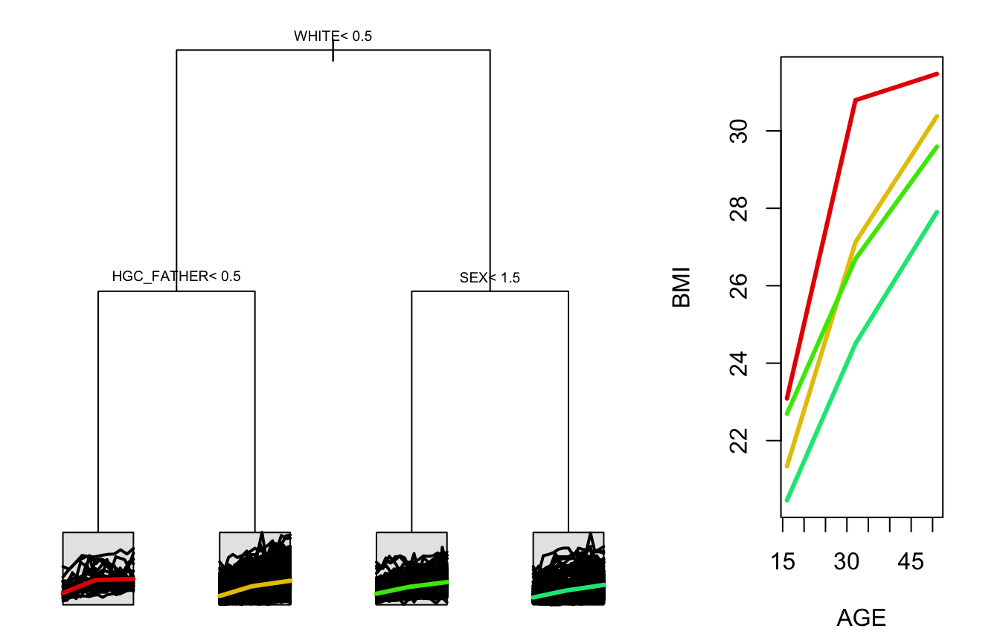

Tree Building with splinetree
2018-08-22
Tree-Intro.RmdThis vignette is meant for users who are familiar with regression trees and the spline projection method but who are unfamiliar with working with splinetree objects. For a more detailed introduction to package and the spline projection method, see the Introduction to splinetree vignette.
This guide walks through examples of building trees, plotting trees, and evaluating trees. The data used for these examples comes from the National Longitudinal Survey of Youth 1979 (NLSY) and we study the relationship between baseline socioeconomic variables (measured during teenage years) and body mass index (BMI) trajectories over time throughout adulthood. We wish to study the relationship between BMI trajectories and variables such as HISP, WHITE, BLACK (indicator variables for subject’s race), SEX (indicator for subject’s sex), Num_sibs (number of siblings), and HGC_FATHER and HGC_MOTHER (highest grade completed by subject’s father and subject’s mother). We randomly sampled 1,000 individuals from the NLSY out of those who have non-missing BMI data at at least 10 timepoints spread out over at least 20 years.
Building and Visualizing Trees
Building our first tree
To build a tree, we use the splineTree() function. There are four parameters to splineTree that do not have default values, and so to get started we need (at a minimum):
A longitudinal dataset, to be supplied via the
dataparameter. The dataset should be in long format, meaning that one row of the data corresponds to one subject at one particular timepoint (in contrast to wide format, where one row of the data corresponds to one subject, and different columns represent responses at different timepoints). Our example dataset,nlsySample, is in long format.A longitudinal trajectory or functional curve of interest, to be supplied via the
tformulaparameter. In our example, we are interested in the response variable,BMI, as a function of the time variable,AGE. So the trajectory is defined by the formulaBMI ~ AGE.The name of an identifier variable, which labels individual observations that belong to the same trajectory, is supplied as a string via the
idvarparameter. In our data example, the name of the identifier variable is “ID”.A one-sided split formula specifying the split variables, to be supplied via the
splitformulaparameter. All split variables should be time constant, meaning that for a given value of the ID varaible, each split variable takes on only one value. These are variables that we suspect might be related to heterogeneity in trajectories in the population. In our example, these are the baseline socioeconomic variables selected from the NLSY.
The data subset below illustrates concepts such as long format, ID variable, and time constant split variable in our dataset. In selecting split variables, we can use HGC_MOTHER and HGC_FATHER because these are baseline variables that were recorded once at the first subject interview and did not change over time. However, HGC (highest grade completed by survey participant) cannot be used as a split variable because the responses for a given individual change as individuals complete more schooling. We will omit HGC, but if we wished to include it we could create a new, time-constant variable using the maximum HGC achieved by each ID.
## ID AGE BMI HGC_MOTHER HGC_FATHER HGC
## 233 11 21 21.61789 12 12 15
## 234 11 22 21.61789 12 12 16
## 237 11 25 21.61789 12 12 16
## 241 11 30 22.31524 12 12 16
## 242 11 31 22.73365 12 12 16
## 244 11 33 20.92054 12 12 16
## 245 11 34 20.92054 12 12 NA
## 246 11 35 21.61789 12 12 16
## 251 11 45 21.61789 12 12 16
## 302 14 17 20.89355 12 12 11
## 303 14 18 21.66739 12 12 12
## 306 14 21 22.44122 12 12 15
## 307 14 22 23.98889 12 12 16
## 309 14 24 23.21506 12 12 16
## 310 14 25 27.85807 12 12 16
## 311 14 26 27.85807 12 12 16After identifying these different types of varaibles in nlsySample, we are ready to make our first call to splineTree().
data <- nlsySample
tformula <- BMI ~ AGE
idvar <- "ID"
split_formula <- ~ HISP + WHITE + BLACK + SEX + Dad_Full_Work + Mom_Full_Work + Age_first_weed + Age_first_smoke + Age_first_alc + Num_sibs + HGC_FATHER + HGC_MOTHER + Mag + News + Lib + Two_Adults_14 + Mother_14 + Father_14 + STABLE_RESIDENCE + URBAN_14 + South_Birth
first_tree <- splineTree(split_formula, tformula, idvar, data)Viewing and visualizing the first tree
We can examine our first tree by printing a summary with stPrint or creating a visual summary with stPlot. Let’s start with the summary.
stPrint(first_tree)
## n= 1000,
##
## node), split, n , coefficients
## * denotes terminal node
##
## 1) root, 1000, ( 4.256522, 7.366760, 7.648072)
## 2) Num_sibs< 11.5, 984, ( 3.961548, 7.348875, 7.532295)
## 4) HGC_MOTHER< 9.5, 244, ( 5.648480, 8.511874, 8.867730)*
## 5) HGC_MOTHER>=9.5, 740, ( 3.405316, 6.965400, 7.091962)*
## 3) Num_sibs>=11.5, 16, (22.397410, 8.466678, 14.768350)*We note the the sample size is n=1000 and the rest of the summary shows how the data is split. First, we have all 1000 individuals in the root node. The next three numbers correspond to the average spline coefficients across all individuals. Because we used default values for most of the parameters, this tree uses a cubic spline basis with no internal knots and no intercept. This gives the tree 3 degrees of freedom (df = degree of polynomial + number of internal knots + intercept), and so each node is described by three coefficients. These three coefficients, together with information about the spline basis used, describe the trajectory that is predicted for each node.
Then the root node was split by the Number of Siblings (984 individuals with \(< 11.5\) and 16 individuals with \(\geq 11.5\) siblings). Then the group of 984 individuals were further split in two according to the highest grade completed by their mother (244 individuals with a 9th grade education or less and 740 individuals with a 10th grade education or higher). The terminal nodes (the leaves of the tree) are denoted with an asterisks. So here node 4, 5, and 3 are all terminal nodes that were not further split in two. These are the groups that should have both homogenous trajectory patterns as well as similar covariate values that are in the tree (number of siblings and mother’s education).
These terminal nodes and the average trajectory are visualized in a plot given by the stPlot() function. The tree is visualized on the left and the average trajectories are overlayed on the right.
stPlot(first_tree)
For an alternate view of the trajectories side by side, we can also use the `spaghettiPlot()`` function to see the three terminal nodes next to each other for comparison.
spaghettiPlot(first_tree)
Because this tree is small, the outputs of stPrint(), stPlot(), and spaghettiPlot() are relatively easy to digest. With larger trees, these representations might be harder to decipher. In this case, it might be useful to extract information from the trees in other ways. For example, we can extract the coefficients describing each node directly by using
treeSummary(first_tree)
## var n dev coeffs.1 coeffs.2 coeffs.3
## 1 Num_sibs 1000 262247.50 4.256522 7.366760 7.648072
## 2 HGC_MOTHER 984 242478.92 3.961548 7.348875 7.532295
## 4 <leaf> 244 77137.29 5.648480 8.511874 8.867730
## 5 <leaf> 740 162416.41 3.405316 6.965400 7.091962
## 3 <leaf> 16 13322.94 22.397415 8.466678 14.768348If we are particularly interested in the node labeled as node 4, we can view its coefficients individually:
treeSummary(first_tree)["4",]$coeffs
## [,1] [,2] [,3]
## [1,] 5.64848 8.511874 8.86773We can also view a summary of node 4, including the path to this node and the coefficients.
terminalNodeSummary(first_tree, 4)
##
## node number: 4
## root
## Num_sibs< 11.5
## HGC_MOTHER< 9.5
##
## N: 244
## Coefficients: 5.64848046155119,8.51187433261078,8.86773033830208Suppose we want to work with the original data for individuals that falls into this terminal node. We can filter or subset our dataset to include only observations with Num_sibs < 11.5 and HGC_MOTHER < 9.5. A more direct strategy, especially for larger or more complex trees, is to use the getNodeData command. This command will also automatically employ surrogate splits for data that is missing values for Num_sibs or HGC_MOTHER.
node4dat <- getNodeData(first_tree, 4)We can confirm that the data found in this node4dat dataframe matches the description of node 4.
range(node4dat$Num_sibs)
## [1] 0 11
range(node4dat$HGC_MOTHER, na.rm = TRUE)
## [1] 0 9Now we know which subset of the data falls into node 4 and we have three coefficients that describe a predicted trajectory for these individuals. However, these coefficients are not useful by themselves. It would be more useful to see a visual of the average trajectory for that node.
plotNode(first_tree, node = 4, includeData = FALSE, estimateIntercept = FALSE)It may seem strange that this plot shows BMI values between 0 and 8, as these are clearly not human BMI values. Since this tree was built without an intercept coefficient, the three coefficients attached to each node describe only the shape of the trajectory after removing the starting level. If we want to see a plot with realistic BMI values, we could set the estimateIntercept parameter to TRUE. This will add the average intercept of all individuals in the node back into the trajectory to make the trajectory pass through reasonable BMI values. This is what occurs in the stPlot() by default.
plotNode(first_tree, node = 4, includeData = FALSE, estimateIntercept = TRUE)Before we move on to customizing our tree building process, it is useful to see how we might reproduce the plot above from scratch. Most of the information needed is stored in the parms attribute of the splinetree object.
node4coeffs <- treeSummary(first_tree)["4",]$coeffs
### Define age range we want trajectory predicted over
xvals <- seq(18, 50, length.out=50)
### Reconstruct basis matrix
basisMat <- bs(xvals, degree = first_tree$parms$degree, Boundary.knots = first_tree$parms$boundaryKnots, knots = first_tree$parms$innerKnots)
### Compute predicted trajectory.
node4preds <- basisMat%*%t(node4coeffs)
### Compare automatic plot to reconstructed plot
require(ggplot2)
## Loading required package: ggplot2
ggplot()+
geom_line(aes(x = xvals, y = node4preds, color="red", size = 1)) +
theme(legend.position="none") +
xlab(tree$parms$tvar) +
ylab(tree$parms$yvar)
While plots such as this one rarely need to be constructed by hand, it it useful to know how to access the information stored in first_tree$parms.
We might also be interested in knowing how well the average coefficients for node 4 match the individually spline coefficients for the individuals who fall in node 4. First, note that we can view the individual coefficients for each person in the dataset in first_tree$parms$flat_data under the variable name Ydata. We can get all of the flattened data corresponding to node 4 with the function getNodeData, and then look at the individual coefficients.
node4flatdata <- getNodeData(first_tree, 4, dataType = "flat")
coeffs <- node4flatdata$Ydata
head(coeffs)
## X1 X2 X3
## [1,] 2.7946466 2.604659 2.806965
## [2,] 21.8426066 -9.832694 18.153387
## [3,] 8.5259209 -6.853505 9.949668
## [4,] -7.7502207 1.661613 1.549227
## [5,] -0.3081449 4.770745 10.596560
## [6,] 10.9441035 21.014290 18.235692Right away, we see that there is quite a bit of variation among individuals in node 4. This suggests that there is variation that our tree cannot explain. Next, we will see how to customize the tree to potentially improve performance, and then we will talk about metrics for measuring tree performance.
Controlling Tree Size
The tree for the first example is quite small, and more homogeneity might be obtained by building a larger tree. The tree size is determined by the value of the complexity parameter (cp). The complexity parameter is passed by splinetree into the internal call to rpart and specifies a minimum improvement in node purity that must occur in order for the tree to make a split. The default cp value of 0.01 typically helps prevent overly large trees. However, since the relationships are fairly weak in the NLSY data, we might consider lowering this number in order to achieve more homogenous nodes.
We also notice that one of our terminal nodes, which only includes individuals with 12 or more siblings, only has 16 people in it. While it is interesting to see that individuals in our sample with 12 or more siblings tend to gain weight much more rapidly than individuals with less than 12 siblings, this finding applies to a very small group and may be unlikely to generalize to a larger population. To avoid forming very small groups that may only be applicable in our sample, we can provide the tree with a minimum node size. We can modify the tree as follows, and the quickly check the tree size, defined as the number of terminal nodes.
second_tree <- splineTree(split_formula, tformula, idvar, data, minNodeSize = 20, cp = 0.001)
treeSize(second_tree)
## [1] 28When we lower the cp to 0.001, the tree has 28 terminal nodes. This tree will be difficult to plot and interpret. Let’s try a value in-between and set cp to be 0.005.
third_tree <- splineTree(split_formula, tformula, idvar, data, minNodeSize = 20, cp = 0.005)
treeSize(third_tree)
## [1] 6
stPrint(third_tree)
## n= 1000,
##
## node), split, n , coefficients
## * denotes terminal node
##
## 1) root, 1000, ( 4.2565220, 7.366760, 7.648072)
## 2) HGC_MOTHER< 9.5, 257, ( 6.5815670, 8.587719, 9.165490)
## 4) Num_sibs< 8.5, 220, ( 5.0164670, 8.499161, 8.760898)
## 8) Age_first_smoke< 14.5, 25, (-0.6891532, 8.210705, 2.540081)*
## 9) Age_first_smoke>=14.5, 195, ( 5.7479570, 8.536143, 9.558439)*
## 5) Num_sibs>=8.5, 37, (15.8875700, 9.114282, 11.571170)*
## 3) HGC_MOTHER>=9.5, 743, ( 3.4523010, 6.944437, 7.123205)
## 6) BLACK< 0.5, 518, ( 3.2739180, 5.904564, 6.831089)*
## 7) BLACK>=0.5, 225, ( 3.8629780, 9.338454, 7.795720)
## 14) Age_first_smoke< 13.5, 22, (11.1772700, 7.404321, 13.892300)*
## 15) Age_first_smoke>=13.5, 203, ( 3.0702950, 9.548064, 7.135008)*
stPlot(third_tree, colors = c("red", "green", "blue", "cyan", "magenta", "grey"))This tree seems reasonably sized; it is small enough to plot and understand, but gives us a more to work with than our first tree. In general, there is no “best”" size for a tree as there are trade offs. With a larger tree, you gain accuracy at the expense of precision and interpretability. It is also possible to build a large tree and then prune it when plotting for ease of visualization. This is done using the prune function, which is in the rpart package. For example, we can recover the plot above using:
stPlot(prune(second_tree, cp = 0.005), colors = c("red", "green", "blue", "cyan", "magenta", "grey"))
Controlling the Evaluation Grid
Another way to customize a tree is to change the grid upon which the projection sum of squares split function is evaluated. This can be done through the nGrid parameter (provide a number of time points to be placed automatically at percentiles of the time variable) or through the gridPoints parameter (provide a vector of time points). Typically, we want the grid points to cover the domain of interest and an increased number will not effect the tree building process. The default is 7 equally spaced grid points. If we increase this to 50 equally spaced grid points, we get a tree that is quite similar to the previous tree. We can see that fourth_tree and third_tree are very similar by prining them out, but we can also use the treeSimilarity function. The treeSimilarity function reports the Adjusted Rand Index (see package mclust) between the clusters created by the two trees. This is a useful metric because sometimes, due to highly correlated covariates, two trees that appear to split on different variables may actually define very similar population subgroups. A value close to 1 indicates a very similar clustering, and so we see that our two trees are quite similar in terms of their terminal nodes.
fourth_tree <- splineTree(split_formula, tformula, idvar, data, minNodeSize = 20, cp = 0.005, nGrid = 50)
treeSimilarity(third_tree, fourth_tree)
## [1] 0.802664However, if the grid points are concentrated in one area of the trajectory, the tree can change drastically. For example, if we set gridPoints = c(18), the splits of the tree will be evaluated using only the value of the smoothed BMI trajectories at age 18. This is basically a univariate regression tree built to age-18 BMIs, but it allows individuals who have no measurement for BMI at age 18 to be included by estimating their BMI via their smoothed trajectories. This tree is much less similar to the original tree.
fifth_tree <- splineTree(split_formula, tformula, idvar, data, minNodeSize = 20, cp = 0.005, gridPoints = c(18))
treeSimilarity(third_tree, fifth_tree)
## [1] 0.3284299Customizing Spline Basis Matrix
We can also change the spline basis that is used to build our tree using the parameters degree, knots, df, and intercept. By default, the package builds trees using a cubic spline basis (degree = 3) with no internal knots (knots = NULL, df = NULL) and with no intercept (intercept = FALSE). These parameters should be modified to accomodate the complexity of the underyling longitudinal trajectories while balancing the number of observations per person.
@clarke2008social report that adult BMIs tend to increase steadily throughout early adulthood and then flatten out in later adulthood. This type can be modeled with a quadratic trajectory (degree = 2) or a piecewise linear trajectory (degree = 1). If we choose a linear trajectory, we must add an internal knot.
We can do this in two ways. One way is to set the df parameter (sets the total number of coefficients) to 2. This will add an internal knot at equally spaced percentiles. In this case, we’d need only one knot and it would be automatically placed at the median age in our dataset.
linear_tree <- splineTree(split_formula, tformula, idvar, data, minNodeSize = 20, cp = 0.007, degree = 1, df = 2)
stPlot(linear_tree, colors=c("red", "orange", "yellow", "green", "blue"))
If we had compelling evidence about the specific age at which trajectories flatten out, we could use the knots parameter to place the internal knot at a different location. When used, the knots parameter is a list of the locations of the internal knots. Note that, if knots is supplied, the df parameter will be ignored. Regardless of the values of knots and df, the boundary knots of the spline basis are always set to the minimum and maximum of the time variable in the data.
Although choosing a higher degree and more internal knots will allow each projected trajectory to more closely approximate the true trajectory, if any individual has fewer observations than the specifed degrees of freedom, they will be assigned NA coefficients and will be thrown out by rpart during the splitting process. The nlsySample has already been limited to individuals with non-missing BMI data at at least 10 time points, and so as long as we do not exceed 10 degrees of freedom this will not be a problem. Another concern involves the placement of internal knots. If an individual has many observations but all of these observations are clustered together on one side of an internal knot, then the coefficient describing the part of the trajectory on the other side of the knot may be NA or it may take on an extreme value. Therefore, before choosing internal knots, we must ensure that all of our individuals have data on both sides of the internal knot. In the nlsySample, we have already ensured that the range from first observation to last observation of all individuals is at least 20 years to protect from this problem.
As a final customization, we can add an intercept to our tree. When intercept = FALSE, the splits of the tree are made based solely on the shape of the trajectories, while ignoring the level. One downside of no-intercept trees is that they can not be used to predict responses. To add an intercept to the linear tree, we must increase the df to 3, because we now need 3 total coefficients (one for the intercept, one for the 1-degree polynomial, and one for the internal knot).
linear_tree_intercept <- splineTree(split_formula, tformula, idvar, data, minNodeSize = 20, cp = 0.007, degree = 1, df = 3, intercept = TRUE)
stPlot(linear_tree_intercept)Looking at the difference between this tree and our previous trees is instructive. Our previous trees did not use SEX as a split variable. This suggests that sex may impact the level of an individual’s BMI but not the change in BMI over time.
Prediction and Evaluation
Now that we have built a few trees and have seen how to work with them, we might wonder how well the tree explains the variation in longitudinal trajectories. For this, we need measures of tree performance. One way to define performance is to focus on the residuals, or prediction errors. This can only be done with tree with an intercept included. To start, we can make predictions from our tree on a training set and look at how well the predicted BMI values match the actual BMI values. The predictY() function also allows the option of predictions on a distinct test set, and so we could also measure out of sample performance.
predictions <- predictY(linear_tree_intercept)
cor(predictions, nlsySample$BMI)
## [1] 0.4201772
plot(predictions, (predictions - nlsySample$BMI), xlab = "Predicted BMI", ylab = "Residual")
We have far more negative residuals than positive residuals. The maximum BMI in the dataset is 59.04, but the maximum predicted BMI is just 32.89. Although several individuals in the sample have extremely large BMIs, no node in the tree predicts these BMIs. This suggests that no subgroup of the population that can be described using only these baseline split variables isolates individuals with very high BMIs; to form such a subgroup, we would likely need other covariates, such as an average exercise level or a diet description.
As a metric of our trees performance, we can also compute an \(R^2\) measure of the total percentage of variation in response that is explained by our tree.
yR2(linear_tree_intercept)
## [1] 0.1764301The \(R^2\) value for our tree is relatively low. We already know from above that we are unable to explain extremely high BMIs, and this shortcoming is reflected in the \(R^2\) value. We can increase \(R^2\) by creating an extremely large tree, but this tree is unlikely to perform well out of sample.
linear_tree_intercept_big <- splineTree(split_formula, tformula, idvar, data, minNodeSize = 5, cp = 0.0001, degree = 1, df = 3, intercept = TRUE)
treeSize(linear_tree_intercept_big)
## [1] 120
yR2(linear_tree_intercept_big)
## [1] 0.4314036The yR2() function tells us the percentage of variation in actual BMI that our model explains. This includes both the variation explained by the splits in the tree and the variation explained by the relationship with age that is modeled in the trajectories. Another option is to use the projectedR2() function, which tells us the percentage of variation in the smoothed BMI trajectories that the tree can explain.
We note that AGE can explain quite a bit of variation in BMI. But we are interested in how much variation in the trajectories can be explained by the baseline covariates. One advantage of projectedR2() is that it accounts for the variation explained by the relationship between AGE and BMI. The “total variation” is no longer the total variation of all BMIs around their mean, but rather, it is the total variation of smoothed BMI trajectories around the mean trajectory. Therefore, while performance will appear “worse” with the projectedR2() metric, the metric more accurately describes the variation explained by the splits of the tree. Furthermore, projectedR2() can be used on intercept trees and no-intercept trees alike. On trees with intercepts, there is the option to include or ignore the intercept coefficient. When the intercept coefficient is ignored, the metric captures the percentage of variation in trajectory shape that is explained by the splits of the tree. When the intercept is included, the performance includes the percentage of variation in starting level that is explained.
projectedR2(linear_tree_intercept, includeIntercept = TRUE)
## [,1]
## [1,] 0.06304377
projectedR2(linear_tree_intercept, includeIntercept = FALSE)
## [,1]
## [1,] 0.03854126
projectedR2(linear_tree)
## [,1]
## [1,] 0.05891497These numbers are quite low, which is not wholly surprising. Most of the variation in BMI that can be explained by AGE. Unfortunately, BMI goes up as we get older, on average. Once the relationship between BMI and AGE is accounted for, without any information about diet or exercise or other habits, there is only a small amount of variation in the trajectory patterns that can be explained by these baseline socioeconomic factors.
In order to understand the projectedR2 performance of a tree, it might be useful to compare predicted coefficients and actual coefficients for a certain individual. To do this, we can use the predictCoeffs() function. If no test set is provided, predictCoeffs(tree) uses tree$parms$flat_data as the test set, and so the rows of the data structure returned will correspond to rows in tree$parms$flat_data.
Suppose that we were really curious about how our linear intercept tree performed for the individual in our dataset with ID=559. We could plot this individual’s actual BMI data along with their smoothed trajectory and their predicted trajectory. In order to view an individual’s own smoothed trajectory, we need to obtain their individual coefficients and reconstruct the appropriate basis matrix. In order to view their predicted trajectory, we could use predictCoeffs() and a basis matrix, but we could obtain the same results using the predictY() function. Both methods are shown below for the sake of an instructive example.
### Get appropriate data
persondata <- nlsySample[nlsySample$ID == 559,]
### Get the individual coefficients for this individual. Stored in "flat_data".
personcoeffs <- linear_tree_intercept$parms$flat_data[linear_tree_intercept$parms$flat_data$ID == 559,]$Ydata
### Get the predicted coefficients for this individual
personpreds <- predictCoeffs(linear_tree_intercept, persondata[1,])
### Form a basis matrix. We must append a column of 1s because this tree has an intercept.
basisMat <- cbind(1, bs(persondata$AGE, degree = linear_tree_intercept$parms$degree, Boundary.knots = linear_tree_intercept$parms$boundaryKnots, knots = linear_tree_intercept$parms$innerKnots))
### Calculate points along the individual smoothed trajectory and predicted trajectory
smoothed <- basisMat %*% t(personcoeffs)
predicted <- basisMat %*% personpreds
plot(BMI ~ AGE, data = persondata, pch = 19)
points(persondata$AGE, smoothed, type='l', col="red")
points(persondata$AGE, predicted, type='l', col="blue")
#### Add the points obtained from "predictY" to show that they match the blue line
points(persondata$AGE, predictY(linear_tree_intercept, persondata), col = "blue", pch = 19) We see from the plot that using
We see from the plot that using predictCoeffs() and predictY() eventually yield the same predicted trajectory. We see that the predicted trajectory for the tree node tends to estimate lower body mass index values than the individual trajectory, echoing the finding above that our model does not seem to predict large BMIs very well.
Conclusion
In this vignette, we saw how to build a tree and then customize the tree by altering the tree size, the spline basis, and the projection grid. We also saw how to print or plot a spline tree, work with splinetree components by hand, and evaluate a splinetree using \(R^2\) metrics. One aspect of our trees that we have yet to address is variable importance. Different trees that we built throughout this vignette included different sets of split variables. Faced with this inconsistency, how do we know which of the split variables contribute most to the portion of varation in BMI trajectory that we are able to explain? To answer this question most accurately, we must use spline forests. For more information, see the Forest Building with SplineTree Vignette.